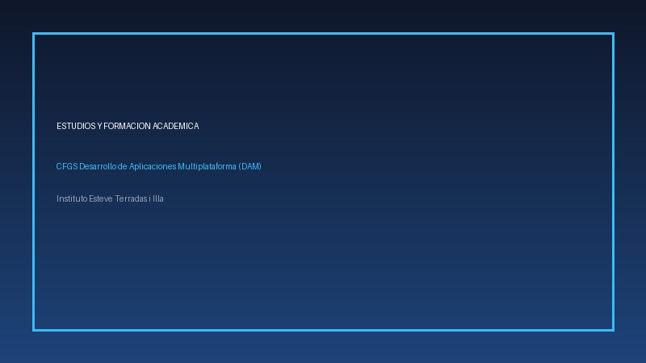

Formación Académica
Mi recorrido formativo se ha orientado progresivamente hacia las tecnologías de la información
y el desarrollo de aplicaciones informáticas:
- Educación Secundaria Obligatoria (ESO) — Graduado con mención en ciencias y tecnología.
- Bachillerato Científico-Tecnológico — Base sólida en lógica, matemáticas y física aplicada.
- CFGS Desarrollo de Aplicaciones Multiplataforma (DAM) — En curso en el Institut Esteve Terradas i Illa.
Conocimientos Técnicos y Herramientas
Llenguajes, entornos y tecnologías adquiridas a lo largo del ciclo formativo:
- Java (Programación modular, colecciones y POO)
- Lenguajes de Marcas: HTML5 semántico y CSS3 moderno
- Bases de Datos: Modelado relacional y lenguaje SQL
- Control de versiones con Git y repositorio en GitHub
- Entornos GNU/Linux y línea de comandos Bash